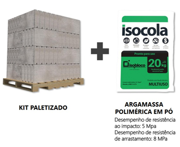
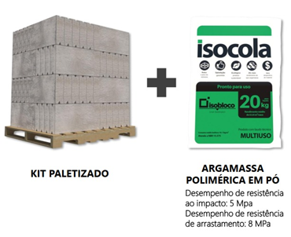

Dúvidas Frequentes
Base Tecnológica
Qual o material de fabricação dos Sistemas da Isobloco?
Todos os Sistemas da Isobloco são fabricados em
Concreto Celular Termoacústico, tanto as soluções de
alvenaria quanto as soluções de laje, utilizando
micro e nanobolhas como agente aerador, em
formulação própria, normatizada e patenteada.
Os blocos são de Isopor (EPS)?
Não.
Nenhum Sistema da Isobloco leva EPS (“isopor”) na sua
composição. São todos fabricados em concreto celular.
O termo ISO, do início do nome Isobloco, se refere à palavra "isotérmico". Isso significa que os Sistemas da Isobloco são capazes de manter uma temperatura ambiente sempre agradável, independente da temperatura externa.
O termo ISO, do início do nome Isobloco, se refere à palavra "isotérmico". Isso significa que os Sistemas da Isobloco são capazes de manter uma temperatura ambiente sempre agradável, independente da temperatura externa.
O que é concreto celular?
Na construção civil, existem
diferentes tipos de concretos e diversas
classificações desses concretos, conforme as suas
propriedades. Uma dessas categorias é a de
concreto leve, onde o concreto celular se enquadra.
O concreto celular é um concreto mais leve que o concreto convencional e com desempenhos técnicos superiores aos demais sistemas construtivos, possuindo isolamento térmico; isolamento acústico; corta-fogo; antimofo; antumidade.
O concreto celular é um concreto mais leve que o concreto convencional e com desempenhos técnicos superiores aos demais sistemas construtivos, possuindo isolamento térmico; isolamento acústico; corta-fogo; antimofo; antumidade.
Benefícios
Quais são os benefícios dos Sistemas da Isobloco
Como consigo economizar usando os Sistemas da Isobloco?
O cálculo orçamentário deve ser feito tomando como base o
Custo Global da obra. Você consegue redução de até 30%,
pelos motivos abaixo:
Parede 40% mais Leve (kg/m²): economia na fundação
e Estrutura;
Redução de Etapas da Obra em 50% a 60% (até fase de
reboco):
sem necessidade de chapisco/emboço/reboco;
Redução na quantidade de equipes de obra
para execução;
Redução de material na obra: menos gasto com
material e menos necessidade de espaço de armazenamento;
Redução tempo de obra: menos pagamento de mão de
obra;
Mão de obra local: maior economia no custo da mão
de obra e mais facilidade de contratação, se comparado aos
sistemas que necessitam de mão de obra especializada;
100% reaproveitável: redução de gasto com caçambas
de entulho.
Quais as dimensões dos produtos?
Tanto os nossos sistemas construtivos de alvenaria quanto os
de laje, seguem a modulação de 30cm x 60cm. A
espessura varia conforme o sistema escolhido e o tipo
de uso.
Para conferir detalhes sobre as medidas exatas, tipo de uso, peso e todas as informações necessárias, basta clicar no link do Catálogo de Produtos: Catálogo de Produtos
Para conferir detalhes sobre as medidas exatas, tipo de uso, peso e todas as informações necessárias, basta clicar no link do Catálogo de Produtos: Catálogo de Produtos
Quantos ºC o Sistema Isobloco isola? Também serve para região
fria?
O Isolamento Térmico dos Sistemas da Isobloco serve
para regiões quentes e frias. A
temperatura interna será estabilizada, para
que fique sempre uma temperatura ambiente agradável. Além de
bloquear a temperatura externa, ele
mantém a interna (caso você tenha resfriado ou
aquecido o ambiente).
Em relação a quantos graus o Sistema isola, vai depender da diferença de temperatura que esteja entre ambientes externo e interno: quanto maior essa diferença, maior será a variação de ºC bloqueados. Por exemplo: se a face externa da parede que recebe todo o sol forte da tarde estiver a uma temperatura de 40ºC, a face interna estará mantendo a temperatura ambiente provável de 28ºC, aproximadamente.
Em relação a quantos graus o Sistema isola, vai depender da diferença de temperatura que esteja entre ambientes externo e interno: quanto maior essa diferença, maior será a variação de ºC bloqueados. Por exemplo: se a face externa da parede que recebe todo o sol forte da tarde estiver a uma temperatura de 40ºC, a face interna estará mantendo a temperatura ambiente provável de 28ºC, aproximadamente.
Para que serve a Isomassa?
É uma bicapa de base acrílica. Quando aplicada sobre
os sistemas da Isobloco, ela
substitui chapisco e reboco, porque as Soluções
Construtivas já são Sistemas prontos e estanques (zero
umidade e zero mofo).
A etapa de aplicação da Isomassa é feita por um pintor. Ela tem um cobrimento de 3mm a 5mm, por isso é importante que a parede esteja livre de rebarbas de argamassa, por exemplo.
Para a aplicação sobre os sistemas da Isobloco, recomendamos sempre que as juntas entre os blocos estejam niveladas e sem excesso de Isocola (argamassa polimérica para assentamento dos blocos). Para isso, assim que os blocos forem assentados com a Isocola, é preciso passar uma esponja com água na junta entre os blocos.
A etapa de aplicação da Isomassa é feita por um pintor. Ela tem um cobrimento de 3mm a 5mm, por isso é importante que a parede esteja livre de rebarbas de argamassa, por exemplo.
Para a aplicação sobre os sistemas da Isobloco, recomendamos sempre que as juntas entre os blocos estejam niveladas e sem excesso de Isocola (argamassa polimérica para assentamento dos blocos). Para isso, assim que os blocos forem assentados com a Isocola, é preciso passar uma esponja com água na junta entre os blocos.
Execução dos Sistemas
É verdade que não precisa de chapisco, emboço e reboco?
Sim, é verdade. Os nossos Sistemas não precisam de chapisco/emboço/reboco, pois já são Sistemas prontos e estanques. Você pode deixar as paredes aparentes ou pode revestir.
Posso deixar minha casa com as paredes aparentes?
Sim, pode, pois os sistemas são estanques. Para finalização,
recomendamos o uso de resina incolor à base d’água nas faces
que ficarem aparentes. A resina é encontrada em lojas de
materiais de construção.
Posso pintar por cima dos blocos?
Pode, mas é importante perceber que a tinta é uma camada
muito fina e que
as juntas entre os blocos ficarão visíveis.
Para ter uma parede mostrando apenas o acabamento liso da pintura, você deve aplicar a Isomassa, antes de pintar. A Isomassa é uma bicapa de base acrílica, também estanque, e substitui chapisco e reboco. É aplicada por um pintor e pode ser utilizada tanto no acabamento natural (liso) quanto texturizada.
Para ter uma parede mostrando apenas o acabamento liso da pintura, você deve aplicar a Isomassa, antes de pintar. A Isomassa é uma bicapa de base acrílica, também estanque, e substitui chapisco e reboco. É aplicada por um pintor e pode ser utilizada tanto no acabamento natural (liso) quanto texturizada.
Como aplicar a Isomassa?
A etapa de aplicação da Isomassa é feita por um
pintor. Ela tem um cobrimento de 3mm a 5mm,
por isso é importante que a parede esteja livre de rebarbas
de argamassa, por exemplo.
Para a aplicação sobre os sistemas da Isobloco, recomendamos sempre que as juntas entre os blocos estejam niveladas e sem excesso de Isocola (argamassa polimérica para assentamento dos blocos). Para isso, assim que os blocos forem assentados com a Isocola, é preciso passar uma esponja com água na junta entre os blocos.
A primeira demão deve ser aplicada para nivelar a parede, utilizando uma desempenadeira lisa de aço. Já a segunda demão serve para acabamento final e precisa ser diluída com um pouco de água, conforme vídeo explicativo. Após aplicação da Isomassa, deve-se lixar e pintar.
No caso de utilização da Isomassa como textura, deve-se diluir ainda mais o conteúdo, para deixa-la menos densa. Em seguida, aplicar com um rolo para texturas. Dica: para não aparecer a junta entre os blocos, a primeira demão da Isomassa pode ser lisa, fazendo nivelamento. E a segunda é texturizada.
É sempre importante respeitar o tempo de secagem entre demão e de secagem final.
Para a aplicação sobre os sistemas da Isobloco, recomendamos sempre que as juntas entre os blocos estejam niveladas e sem excesso de Isocola (argamassa polimérica para assentamento dos blocos). Para isso, assim que os blocos forem assentados com a Isocola, é preciso passar uma esponja com água na junta entre os blocos.
A primeira demão deve ser aplicada para nivelar a parede, utilizando uma desempenadeira lisa de aço. Já a segunda demão serve para acabamento final e precisa ser diluída com um pouco de água, conforme vídeo explicativo. Após aplicação da Isomassa, deve-se lixar e pintar.
No caso de utilização da Isomassa como textura, deve-se diluir ainda mais o conteúdo, para deixa-la menos densa. Em seguida, aplicar com um rolo para texturas. Dica: para não aparecer a junta entre os blocos, a primeira demão da Isomassa pode ser lisa, fazendo nivelamento. E a segunda é texturizada.
É sempre importante respeitar o tempo de secagem entre demão e de secagem final.
Como faço para aplicar revestimento cerâmico?
Para aplicação de revestimento cerâmico em ambientes
internos (como áreas molhadas, por exemplo), pode-se aplicar
o revestimento direto sobre os blocos, fazendo ranhuras
sobre as paredes (para maior aderência) e utilizando
argamassa ACIII para fixação. Observação: para peças acima
de 60x60cm, deve-se consultar manual do fabricante.
Já para aplicação de revestimento cerâmico em fachadas, é preciso fazer chapisco e emboço, devido ao atendimento à Norma de aplicação de revestimento cerâmico em fachadas.
Para maiores detalhes, basta consultar o manual do usuário dos Sistemas Isobloco: Manual de Uso e Montagem

Já para aplicação de revestimento cerâmico em fachadas, é preciso fazer chapisco e emboço, devido ao atendimento à Norma de aplicação de revestimento cerâmico em fachadas.
Para maiores detalhes, basta consultar o manual do usuário dos Sistemas Isobloco: Manual de Uso e Montagem
Precisa de mão de obra especializada para construir?
Não precisa de mão de obra especializada. É um
sistema inclusivo, pois permite que a mesma
mão de obra local que trabalha com alvenaria
convencional, execute os sistemas com Isobloco. Nós apenas
qualificamos, dando treinamento online gratuito.
Preciso colocar “ferro” (vergalhão de aço) dentro da parede?
Depende se será uma obra com alvenaria de
vedação ou estrutural.
Para construções que vão utilizar os nossos Sistemas apenas como vedação, quem vai suportar as cargas é a estrutura (“esqueleto” do imóvel) e os nossos sistemas farão o fechamento dos vãos entre vigas e pilares. Nesse tipo de obra, não precisa inserir aço e graute nas paredes. O vergalhão de aço, junto com o graute, é inserido apenas em paredes estruturais, que é o tipo de obra autoportante, onde as paredes são responsáveis por suportar as cargas do imóvel. Nesse modelo de construção, não há estrutura principal de vigas e pilares. Caso queira executar sua obra no Sistema Estrutural, converse com o a nossa equipe técnica-comercial antes, via WhatsApp, para saber a possibilidade.
Para construções que vão utilizar os nossos Sistemas apenas como vedação, quem vai suportar as cargas é a estrutura (“esqueleto” do imóvel) e os nossos sistemas farão o fechamento dos vãos entre vigas e pilares. Nesse tipo de obra, não precisa inserir aço e graute nas paredes. O vergalhão de aço, junto com o graute, é inserido apenas em paredes estruturais, que é o tipo de obra autoportante, onde as paredes são responsáveis por suportar as cargas do imóvel. Nesse modelo de construção, não há estrutura principal de vigas e pilares. Caso queira executar sua obra no Sistema Estrutural, converse com o a nossa equipe técnica-comercial antes, via WhatsApp, para saber a possibilidade.
Preciso de uma estrutura (pilares e vigas) para executar meu
imóvel em Sistemas Isobloco?
Depende se será utilizado um sistema de vedação ou
autoportante. Para obras com sistema de vedação, deve-se ter
elementos estruturais de pilares e vigas suportando as
cargas necessárias.
Qual a diferença entre alvenaria de vedação e alvenaria
estrutural/autoportante?
Para construções que vão utilizar os nossos Sistemas apenas
como vedação, quem vai suportar as cargas é a
estrutura (“esqueleto” do imóvel) e os nossos sistemas farão
o fechamento dos vãos entre vigas e pilares. Nesse
tipo de obra, não precisa inserir aço e graute nas
paredes, pois já conta com os elementos estruturais de
pilares e vigas.
O vergalhão de aço, junto com o graute, é inserido apenas
em paredes estruturais, que é o tipo de obra autoportante, onde as
paredes são responsáveis por suportar as cargas do
imóvel.
Nesse modelo de construção,
não há estrutura principal de vigas e pilares. Caso
queira executar sua obra no Sistema Estrutural, converse com
o a nossa equipe técnica-comercial antes, via WhatsApp, para
saber a possibilidade.
Posso construir vários pavimentos com os Sistemas Isobloco?
Sim, pode-se construir vários pavimentos. Desde que os
sistemas sejam utilizados apenas com vedação, tendo uma
estrutura principal para sustentação das cargas do projeto.
Qual o tipo de fundação devo utilizar (radier/sapata/estaca)?
O tipo de fundação depende da combinação de alguns fatores,
como peso próprio do Sistema, tipo de solo e cargas
envolvidas no projeto. É sempre importante fazer um estudo
do solo, assim como é importante realizar o projeto
estrutural com profissional habilitado, que irá dimensionar
o tipo de fundação necessária, conforme a necessidade da sua
construção.
Independente do tipo de fundação dimensionada, um sistema construtivo leve é capaz de gerar economia na quantidade de aço da fundação.
Independente do tipo de fundação dimensionada, um sistema construtivo leve é capaz de gerar economia na quantidade de aço da fundação.
Preciso impermeabilizar a minha fundação, mesmo usando
Sistemas Isobloco?
Sim. A impermeabilização da fundação deve ser realizada
normalmente.
Vocês executam a obra ou elaboram projetos?
Não executamos obras nem fazemos os projetos, pois somos uma
indústria. No entanto, oferecemos
suporte aos projetistas que estiverem desenvolvendo
os projetos, por meio de reuniões online para tirar dúvidas
e envio de materiais técnicos.
Já para a etapa de execução, não precisa de mão de obra especializada, porém oferecemos qualificação, por meio de treinamentos com vídeos tutoriais, manuais de montagem, reunião online para tirar dúvidas e envio de materiais técnicos.
Já para a etapa de execução, não precisa de mão de obra especializada, porém oferecemos qualificação, por meio de treinamentos com vídeos tutoriais, manuais de montagem, reunião online para tirar dúvidas e envio de materiais técnicos.
Como faço para embutir as instalações elétricas e hidráulicas?
Faça a marcação do caminho dos eletrodutos na parede. Corte
as paredes com Makita, a uma profundidade máxima de até
metade da espessura dos blocos. Encaixe os eletrodutos e
feche os rasgos com concreto magro, graute ou com a massa
feita a partir do próprio resíduo do Isobloco (pó de
Isobloco + Isocola/argamassa ACIII). Depois, aplique tela de
fibra de vidro por cima dos rasgos, antes de receber
qualquer revestimento.
Para maiores detalhes, basta consultar o manual do usuário dos Sistemas Isobloco:
Manual do Usuário dos Sistemas Isobloco

Para maiores detalhes, basta consultar o manual do usuário dos Sistemas Isobloco:
Manual do Usuário dos Sistemas Isobloco
Posso pendurar rede na parede de Isobloco?
Sim, pode. Para isso, utilize armadores chumbados nas
paredes.
Posso fixar quadros/armários/bancadas na parede de Isobloco?
Sim, é possível fixar objetos suspensos nas paredes em
Isobloco.
Utilize buchas e parafusos adequados para o tipo de carga, conforme especificado em manual, mas possíveis de serem encontrados em lojas de materiais de construção.

Guia de Montagem
Para fixar bancadas, deve-se chumbar na parede um vergalhão de aço com graute ou compound.
Nunca utilize prego e martelo para fixação nem qualquer outra ferramenta de impacto.

Guia de Montagem
Utilize buchas e parafusos adequados para o tipo de carga, conforme especificado em manual, mas possíveis de serem encontrados em lojas de materiais de construção.
Guia de Montagem
Para fixar bancadas, deve-se chumbar na parede um vergalhão de aço com graute ou compound.
Nunca utilize prego e martelo para fixação nem qualquer outra ferramenta de impacto.
Guia de Montagem
Como fica a estética final do imóvel com Isobloco?
A estética final de uma obra com os Sistemas Isobloco será
conforme o Projeto Arquitetônico.
Quanto custa/qual o preço do bloco/milheiro?
Não vendemos em unidades nem em milheiro, vendemos em Kits
(pallets com blocos e Isocola, que é uma argamassa
polimérica). O preço dos Kits varia conforme o sistema
construtivo. Para consultar o preço de algum sistema
específico, entre em contato com o WhatsApp do Comercial.
Como reaproveitar as sobras de Isobloco?
É possível reaproveitar como agregados miúdo ou graúdo,
então é importante se atentar para separar todos os resíduos
dos nossos sistemas.
Agregado miúdo: bastando triturar as peças em concreto celular e utilizar o pó para misturar com a Isocola ou alguma argamassa realizada na obra.
Agregado graúdo: utilizar pedaços maiores das peças em concreto celular, como se fosse brita zero e inserir no preparo de algum concreto que precise ser feito (seja para concretagem de piso ou de laje).
Agregado miúdo: bastando triturar as peças em concreto celular e utilizar o pó para misturar com a Isocola ou alguma argamassa realizada na obra.
Agregado graúdo: utilizar pedaços maiores das peças em concreto celular, como se fosse brita zero e inserir no preparo de algum concreto que precise ser feito (seja para concretagem de piso ou de laje).
Posso construir muro com Isobloco?
Sim. É possível construir muro, mas com sistemas a partir de
10 cm de espessura. O muro pode ser todo Estrutural,
utilizando vergalhões de aço e graute para sua estruturação
a cada duas fiadas, incluindo pilares executados com o
próprio bloco. Ou pode-se realizar a combinação de pilares
em concreto armado e o fechamento com os Sistemas da
Isobloco.
Aquisição das Soluções
A Isobloco atende Pessoa Física ou somente Pessoa Jurídica?
Atendemos a todos os públicos, pessoa física ou jurídica.
Os Sistemas são vendidos em milheiro, em unidade ou em m²?
Não vendemos em milheiro nem em unidade. Vendemos nossos
sistemas construtivos através de KITS. Cada Kit
equivale a um pallet com uma quantidade específica de
peças (blocos, lajotas ou placas) e uma quantidade
específica de isocola (para aplicar as peças).
A quantidade de material por Kit depende do Sistema Construtivo.
Para conferir detalhes sobre as medidas exatas, tipo de uso, peso e todas as informações necessárias, basta clicar no link do Catálogo de Produtos: Catálogo de produtos

A quantidade de material por Kit depende do Sistema Construtivo.
Para conferir detalhes sobre as medidas exatas, tipo de uso, peso e todas as informações necessárias, basta clicar no link do Catálogo de Produtos: Catálogo de produtos

Como consigo fazer um orçamento?
Se você já tiver feito o levantamento das áreas de
alvenaria e laje, pode nos informar essas metragens via
WhatsApp e faremos o orçamento. Você também pode nos enviar
seu projeto para orçamento pelo e-mail:
tecnico@isobloco.com.br
ou entre em contato no WhatsApp do Comercial.
Um lembrete: área de alvenaria é diferente de área construída : para quantificar área de alvenaria é necessário multiplicar o comprimento de todas as paredes pela altura das mesmas. No caso de todas serem da mesma altura, basta ir somando o comprimento de todas as paredes. Quando tiver com a soma final, basta multiplica-la pelo pé-direito do imóvel.
Um lembrete: área de alvenaria é diferente de área construída : para quantificar área de alvenaria é necessário multiplicar o comprimento de todas as paredes pela altura das mesmas. No caso de todas serem da mesma altura, basta ir somando o comprimento de todas as paredes. Quando tiver com a soma final, basta multiplica-la pelo pé-direito do imóvel.
O que vem nos Kits?
O Kit é um pallet que contém as peças modulares em concreto celular (blocos, lajotas ou placas) e a Isocola (argamassa polimérica para aplicação das peças).
O rendimento (em m²), a quantidade, peso e demais detalhes, varia conforme o Sistema Construtivo e você pode conferir no link do Catálogo de Produtos
O rendimento (em m²), a quantidade, peso e demais detalhes, varia conforme o Sistema Construtivo e você pode conferir no link do Catálogo de Produtos
Como faço para comprar na minha região? Tem quantidade mínima?
No momento, toda aquisição é realizada direto de fábrica, no estado de Alagoas, não contendo pontos de distribuição em outros estados.
Para realizar a compra, basta conversar com a equipe técnica-comercial, via WhatsApp e acertar todos os detalhes, assim como tirar as dúvidas sobre qual Sistema é mais indicado para a sua necessidade.
Como vendemos em Kits fechados, a mínima quantidade a ser adquirida é 01 (um) Kit. Porém, se o seu caso for de uma pequena reforma, por gentileza, envie mensagem no WhatsApp, para compreender se existem outras possibilidades.
Para realizar a compra, basta conversar com a equipe técnica-comercial, via WhatsApp e acertar todos os detalhes, assim como tirar as dúvidas sobre qual Sistema é mais indicado para a sua necessidade.
Como vendemos em Kits fechados, a mínima quantidade a ser adquirida é 01 (um) Kit. Porém, se o seu caso for de uma pequena reforma, por gentileza, envie mensagem no WhatsApp, para compreender se existem outras possibilidades.
Financiamento
É possível financiar meu imóvel em Isobloco?
Sim, é possível financiar. Para isso, você deve utilizar nossos Sistemas como Alvenaria de Vedação: você faz a estrutura do imóvel e fecha os vãos entre pilares e vigas com os nossos sistemas.
No caderno técnico do SINAPI (pág. 6), sobre Alvenarias Diversas, é possível identificar que o bloco de concreto celular 10x30x60cm está entre os tipos de alvenarias aceitas pela Caixa.
No caderno técnico do SINAPI (pág. 6), sobre Alvenarias Diversas, é possível identificar que o bloco de concreto celular 10x30x60cm está entre os tipos de alvenarias aceitas pela Caixa.
Logística
Onde estão localizados?
Estamos localizados no estado de Alagoas, na cidade de Marechal Deodoro, localizada a 29 km da capital Maceió.
Vocês entregam na minha região? Como fica o frete?
Sobre o fornecimento dos produtos: fornecemos nacionalmente.
Sobre o frete: trabalhamos na modalidade “frete direcionado”. Ou seja, não realizamos o frete, mas quando o cliente necessita, direcionamos às empresas parceiras. E o cliente faz o pagamento do frete direto ao transportador.
Sobre o frete: trabalhamos na modalidade “frete direcionado”. Ou seja, não realizamos o frete, mas quando o cliente necessita, direcionamos às empresas parceiras. E o cliente faz o pagamento do frete direto ao transportador.
Preciso adaptar o meu projeto para o Sistema Isobloco?
Não necessariamente. Se o seu projeto já estiver pronto, é possível utilizá-lo sem adaptações. Mas se houver a possibilidade de realizar ajustes para torna-lo mais racionalizado, fornecemos suporte aos projetistas. Cada caso é avaliado individualmente.